Het knusse stadje in het midden van het Knuffeldal: Burgemeester Vadsema, het Grote Knusfeest, Cocotje...
The biome and the townHet bioom en het stadje
The Knuffeldal (guhs:knuffeldal) is a small but findable biome in the Guhmension (about 3% of it, never next to the Diepe Guhzee): soft pink knuffelgras, fluffy pluizenbomen, guhpaddenstoelen and floating pluisjes. No Mikas spawn here. In the middle of every dal stands exactly one town: a plein with a fountain, the town hall steps of the Burgemeester, Opa Guh's bench by the campfire, the feestbuffet, six guh houses with residents (make friends with all of them) and a grijpmachine under the arcade. On the four sides of the plein stand the Knabbelbakkerij, the Knabbelthee-huisje, the kapper Knip & Vads and the Knuffelcreche. The town is protected: you can't break or build in it (in survival). Find it with the superkompas, category Knus.
Het Knuffeldal (guhs:knuffeldal) is een klein maar vindbaar bioom in de Guhmensie (zo'n 3%, nooit naast de Diepe Guhzee): zacht roze knuffelgras, pluizige pluizenbomen, guhpaddenstoelen en zwevende pluisjes. Hier spawnen geen Mika's. In het midden van elk dal staat precies één stadje: een plein met een fontein, het bordes van de Burgemeester, het bankje van Opa Guh bij het kampvuur, het feestbuffet, zes guhhuisjes met bewoners (word vriendjes met ze allemaal) en een grijpmachine onder de arcade. Aan de vier kanten van het plein staan de Knabbelbakkerij, het Knabbelthee-huisje, kapper Knip & Vads en de Knuffelcreche. Het stadje is beschermd: je kunt er (in survival) niet breken of bouwen. Vind het met het superkompas, categorie Knus.
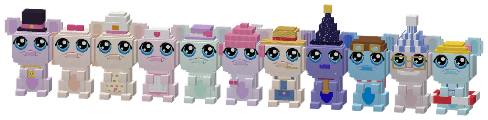
Eleven guh charactersElf guhpersonages
From left to right: Burgemeester Vadsema, Cocotje, Bakker Korstje, Juf Knuffel, Mevrouw Theelepel, Kapper Krulletje, Boerin Hooibaal, Professor Sterretje, Kapitein Wolkje, Opa Guh and Badmeester Bubbel. Each has his own model (a top hat, an apron, a telescope, goggles, a whistle...), a Guhdex page and a lot to say, full of njeg and VAHOEG.
Van links naar rechts: Burgemeester Vadsema, Cocotje, Bakker Korstje, Juf Knuffel, Mevrouw Theelepel, Kapper Krulletje, Boerin Hooibaal, Professor Sterretje, Kapitein Wolkje, Opa Guh en Badmeester Bubbel. Elk heeft een eigen model (een hoge hoed, een schortje, een telescoop, een vliegbril, een fluitje...), een Guhdex-pagina en heel veel te vertellen, vol njeg en VAHOEG.
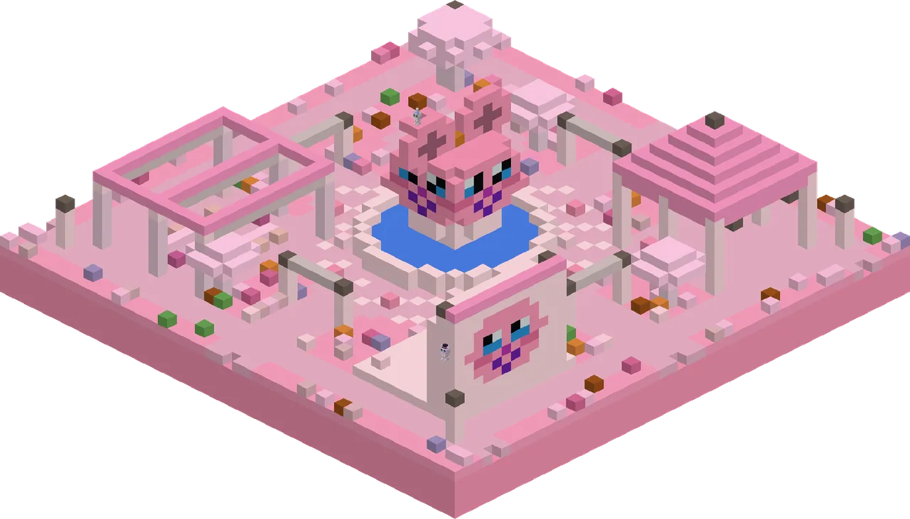
The pleinHet plein
The heart of the town: the fountain, the Burgemeester on his steps (top left), Opa Guh on his bench by the campfire circle (bottom right), the feestbuffettafels, the seasonal seizoensbloembakken and seizoensslingers (they change with the season) and the arcade with the grijpmachine.
Het hart van het stadje: de fontein, de Burgemeester op zijn bordes (linksboven), Opa Guh op zijn bankje bij de kampvuurkring (rechtsonder), de feestbuffettafels, de seizoensbloembakken en seizoensslingers (die veranderen mee met het seizoen) en de arcade met de grijpmachine.
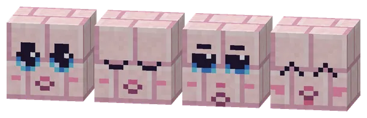
Building blocksBouwblokken
Build your own knuffel town: knuffelsteen (smooth sandstone + pink dye) with stairs, slabs and walls, knuffelsteen met gezicht (knuffelsteen + a kaasknabbel; four moods), pluisdak (pink wool roof) with stairs and slabs, and the knuffelklinkers paving.
Bouw je eigen knuffelstadje: knuffelsteen (gladde zandsteen + roze kleurstof) met trappen, platen en muren, knuffelsteen met gezicht (knuffelsteen + een kaasknabbel; vier stemmingen), pluisdak (roze wollen dak) met trappen en platen, en de knuffelklinkers als bestrating.
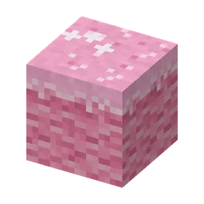
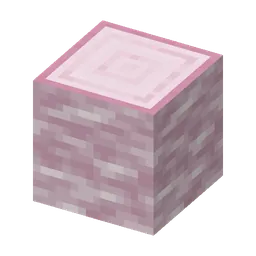
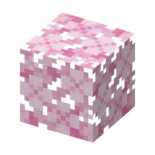
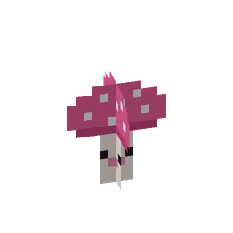
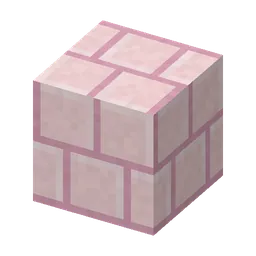
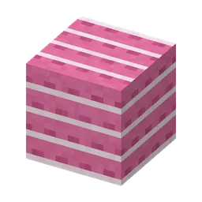
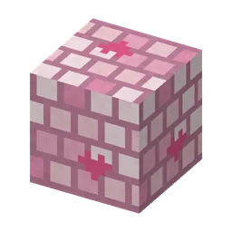
PicturesPlaatjes
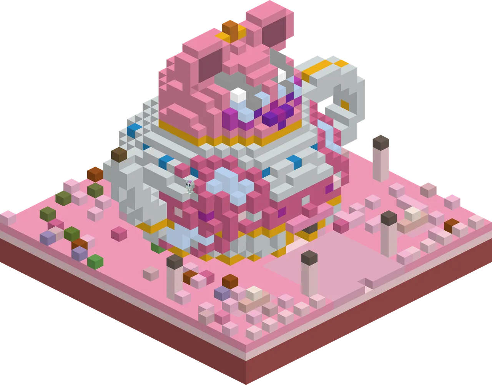
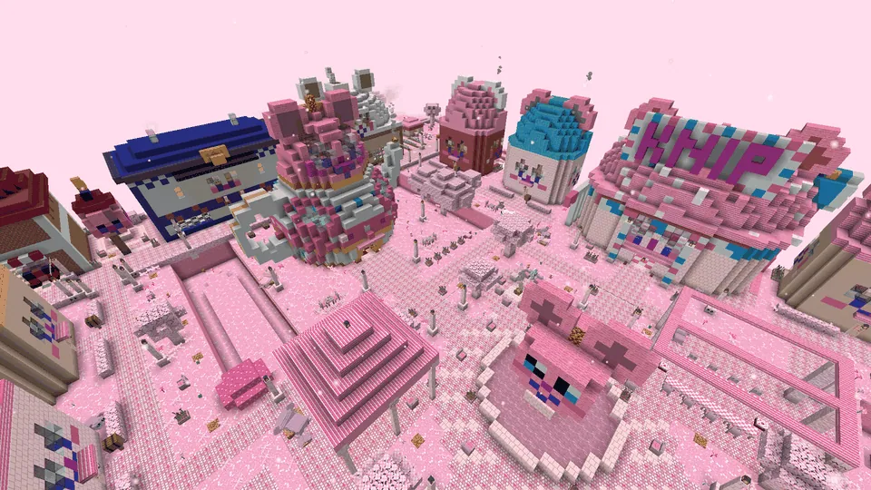
See alsoZie ook
 Baking knabbelsKnabbels bakkenMinigames
Baking knabbelsKnabbels bakkenMinigames The cuddle crecheDe KnuffelcrecheMinigames
The cuddle crecheDe KnuffelcrecheMinigames The hairdresser showDe kappersshowMinigames
The hairdresser showDe kappersshowMinigames The Great Cosy PartyHet Grote KnusfeestStoriesVerhalen
The Great Cosy PartyHet Grote KnusfeestStoriesVerhalen JobsBeroepenStoriesVerhalen
JobsBeroepenStoriesVerhalen Building a house togetherSamen een huisje bouwenStoriesVerhalen
Building a house togetherSamen een huisje bouwenStoriesVerhalen